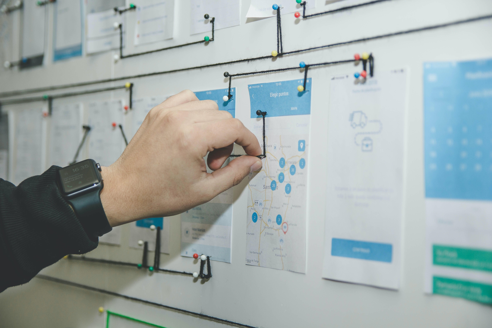

Livestreaming
Livestreaming ist, wenn du ein Video live ins Internet überträgst.
Dies kann man auf YouTube oder Twitch machen. Twitch eher für Gaming
und YouTube sehr breit. Instagram ist eher für den Privaten
gebrauch.
Livestreaming
Streaming wurde in Letzter Zeit immer mehr gebraucht und gemacht
also erstellt weil einfach mehr Leute sich interessieren dies an
zuschauen wegen Corona wo man die ganze zeit zuhause war
Anwendungsbereiche der verschiedenen Streaming Plattformen:
-
YouTube_Man muss sich verifizieren und dann 24 Stunden warten bis
man Streamen kann
-
Twitch_Braucht man um in der Gaming Welt zu streamen und nicht
eine unbedingt riesige Reichweite haben möchte
-
Instagram_Wenn man einfach Privat mit seinen Kollegen/Followern
Streamen will
Fazit
Ich haben ein paar Sachen über Livestreaming gelernt, aber ich
wusste schon viel. Aber es ist gut, dass ich das weiss, dass es zum
Verifizieren 24 stunden geht, bis man dann Streamen kann, falls ich
das in Zukunft mal brauchen werde. Es ist gut wenn man sich das man
anschaut weil man kann wen man gut ist sehr viel geld verdienen oder
einfach viel Spass damit haben.
Projektmanagement

Projektmanagement wird als Aufgabe gegliedert in Projektdefinition,
Projektdurchführung und Projektabschluss. Ziel ist, dass Projekte
richtig geplant und gesteuert werden, dass die Risiken begrenzt,
Chancen genutzt und Projektziele qualitativ, termingerecht und im
Kostenrahmen erreicht werden.
Also im Projektmanagement gibt es eine Hilfe namens IPERKA
- I Informieren
- P Planen
- E Entscheiden
- R Realisieren
- K Kontrollieren
- A Auswerten
Das ist ein Ablauf, den man einhalten sollte, um gute Projekte zu
führen und zu vollenden.
- Das Informieren sollte man gründlich.
- Die Planung ist am schwierigsten und braucht viel Zeit.
-
Das Entscheiden geht recht schnell aber besprich es mit deinen
Projektkameraden
-
Das Realisieren sollte am längsten gehen und für diesen Schritt
braucht man viel Konzentration.
-
Das Kontrollieren geht auch schnell ausser du hast sehr Komplexe
Vorgaben
-
Auswertung ist so zu sagen Reflektieren über die Arbeit,
Zusammenarbeit, Stimmung und so weiter
Fazit
Ich muss mich daran gewöhnen, dass ich so schnell wie möglich
einfach einen Plan machen muss oder überhaupt einen zu machen.